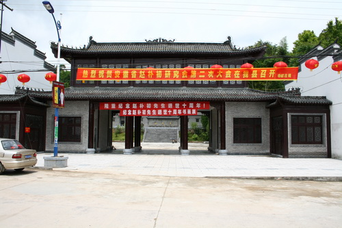
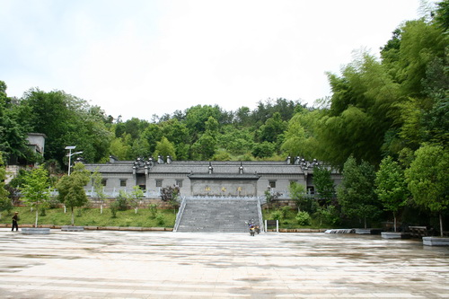
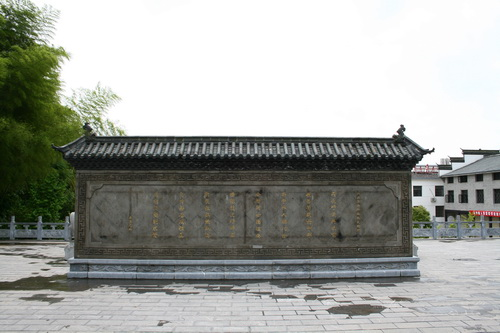

赵朴初纪念馆1

赵朴初纪念馆2

赵朴初纪念馆3
赵朴初纪念馆位于安徽省太湖县花亭湖风景区，2007年11月正式开馆。 从2001年开始，安徽太湖县人民政府在 赵朴初故里寺前镇麒麟村万年冲兴建赵朴初文化公园，占地46公顷，由赵朴初灵骨树葬地、赵朴初纪念馆、纪念碑廊、报恩禅寺、拜石湖和东方第一佛塔等组成 ，赵朴初纪念馆位于公园西侧。纪念馆占地面积6公顷，建筑面积1800平方米，仿照赵朴初先生祖屋“状元府”的建筑风格建设，“三进”“三纵”布局，共有34间大小用房，包括中堂、祖堂、书房和居室；八个展厅 、接待室以及后花园等。建筑沿袭当地清代居屋风格，粉墙黛瓦，马头墙，内院青石板铺地。陈设古朴典雅，严肃庄重。纪念馆集中展示了赵朴初生平活动的照片、实物资料等 ，是安庆市一处人文景观，为世人瞻仰、学习和研究赵朴初提供了良好场所。